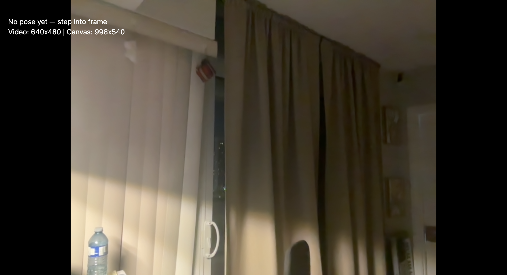
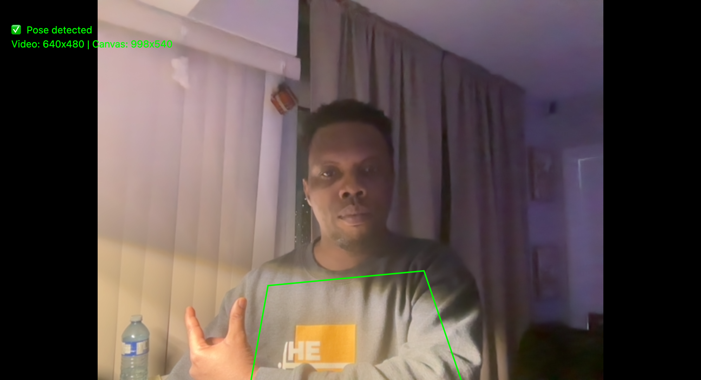
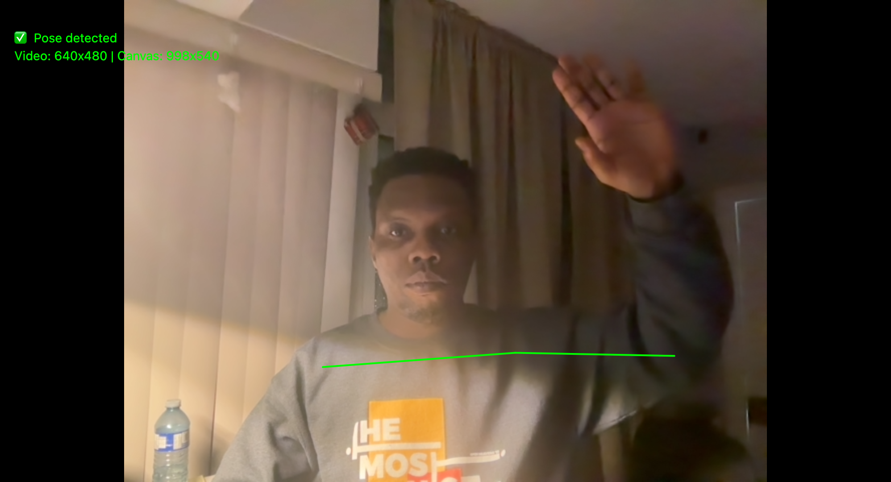
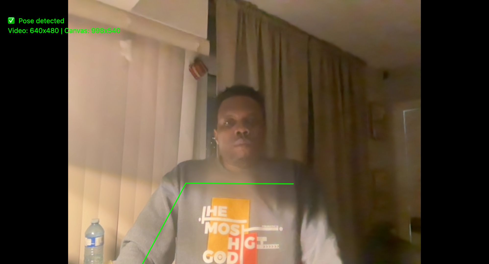

Choreography of Everyday Objects
Choreography of Everyday Objects is an interactive experience controlled entirely by physical gestures and simple household objects. Using a laptop webcam, p5.js, and the ml5.js PoseNet model, the system translates how I move my body and position objects into a living, generative visual composition.
This page documents my process: early sketches, system diagrams, in-progress screenshots, and the first working prototype.

Concept & Interaction
The main question behind this project is: How can everyday, non-digital things become an interface for a digital system? Instead of using a mouse or keyboard, I rely on body pose and the presence of objects within the webcam frame.
Core Idea
Standing in front of the webcam, the user becomes a choreographer. Raising hands above the head, leaning left or right, or holding an object near the torso all influence the visual output. The prototype uses PoseNet to track key points such as wrists, shoulders, and nose, and maps those positions to abstract visual “modes.”
The first prototype focuses on two primary modes:
- Mode A: Hands above head → circular, particle-like motion.
- Mode B: Hands down → structured grid that shifts with body lean.
Inputs & Outputs
Inputs (real-world):
- Raise one or both hands above the head.
- Lean left or right relative to the camera.
- Move hands closer together or farther apart.
- (Planned) Hold simple objects like a mug or book near the face or chest.
Outputs (on-screen):
- Scene changes between circular and grid-based visuals.
- Intensity and scale mapped to wrist distance.
- Horizontal offset mapped to body lean.
Ideation Sketches & Diagrams
I started by sketching the relationship between the user, the webcam, and the on-screen system. These drawings helped me define how specific gestures map to different visual states.
Interaction & System Sketches


Prototype Development
Below is a snapshot of how the prototype evolved—from a blank p5 canvas to a working pose-driven interaction. Each stage is captured with a screenshot and a short note.
Process Milestones
-
01 · Environment Setup
Created a basic p5.js sketch and confirmed that the canvas renders correctly in the browser.
-
02 · Webcam Integration
Connected the webcam using
createCapture(VIDEO)and tested the video feed before hiding it for the final interaction. -
03 · PoseNet Working
Loaded the ml5 PoseNet model and visualized keypoints for the nose and wrists to confirm reliable tracking.
-
04 · Gesture Mapping
Implemented logic to detect when both hands move above the head and used that as a switch between visual modes.
-
05 · Visual Modes
Built two distinct visual systems: a circular particle field and a shifting grid, both modulated by pose data.
-
06 · Refinement & Debug UI
Added on-screen labels and subtle styling tweaks to make the interaction clearer and easier to document.
Development Screenshots




Live Prototype Demo
The sketch below runs the current version of the prototype. Ensure your webcam is enabled in the browser, then step into the frame and start experimenting with movement.
How to interact:
Stand or sit so that your upper body is visible in the webcam. Raise both
hands above your head to switch to circular motion. Lower your hands to
return to the shifting grid. Lean left or right to slide the composition
horizontally. Vary the distance between your wrists to change the overall
intensity.
Debug keys for documentation:
1 = Force Mode A, 2 = Force Mode B, 0 = Pose control, D = Toggle debug,
S = Save screenshot.
Reflection & Next Steps
What I learned
- Embodied interaction feels very different from mouse/keyboard input; it requires thinking about posture, comfort, and fatigue.
- Pose data is noisy and imperfect, which pushed me to design robust mappings that still feel expressive even when tracking is not exact.
- Progressive documentation (screenshots + sketches) helped me see the evolution of the idea instead of just the final outcome.
Future directions
- Train a simple object classifier (e.g., mug vs. book vs. empty hands) and map each class to a unique visual “universe.”
- Add an ambient sound layer whose parameters are controlled by pose and object presence.
- Explore multi-person interaction where two people co-choreograph the visuals together.